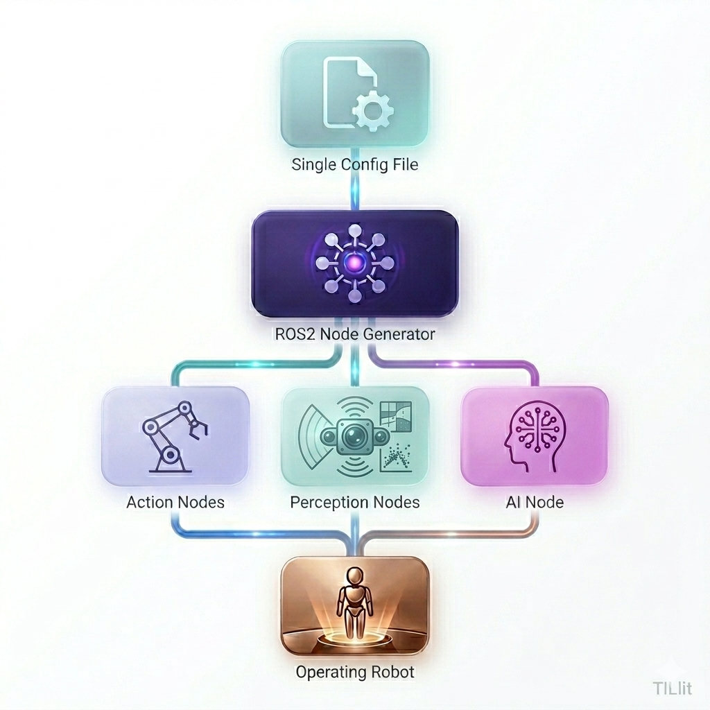

JOSHUA
Joint Open-Source Hub for Universal Automation
Project Joshua is a modular software framework engineered to bridge the critical gap between advanced AI/ML development and real-world physical deployment.
Historically, deploying AI onto robots has been a brittle, highly coupled process. Joshua solves this by decoupling software layers, enabling developers to deploy complex AI models across diverse robotic hardware with minimal friction.
Technical Backbone
-
OS
Ubuntu 22.04 LTS / 24.04 LTS
-
Robotics & build
ROS 2 messaging with Bazel for hermetic, deterministic builds
-
Languages
Modern C++ and Python
-
Hardware
Cross-compilation for x86 and ARM64, including NVIDIA Jetson
Key Features
-
Configuration-driven
One centralized config runs the same core stack on different robot form factors.
-
Hardware abstraction
Swap sensors and actuators without changing upstream AI or the rest of the stack.
-
Open ecosystem
ROS 2 and Bazel integrate with the broader open-source robotics community.
-
Sim-to-real
Move from simulation to physical robots with configuration toggles—no code changes.
